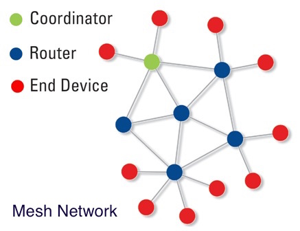

2.4GHz通信技术
概述
2.4GHz无线通信，是一种短距离无线传输技术，供开源使用。2.4GHz所指的是一个工作频段，2.4GHz ISM（Industry Science Medicine）是全世界公开通用使用的无线频段，蓝牙技术即工作在这一频段。在2.4GHz频段下工作可以获得更大的使用范围和更强的抗干扰能力，目前广泛应用于家用及商用领域。
2.4GHz无线通信的主要特点包括：
- 适用范围广：它是一个全球性的频段，开发的产品具有全球通用性，各种无线产品均可使用此频段，目前广泛用于无线建设及无线宽带路由器等室内场合。
- 带宽高：它整体的频宽胜于其他ISM 频段，这就提高了整体数据传输速率，允许系统共存，允 家用无线路由器 家用无线路由器 许双向传输，且抗干扰性强，传输距离远（短距离无线技术范围）。
- 耗电低：2.4GHz无线电和天线的体积相当小，产品体积也更小，从而使芯片更集中，减少耗电。因2.4GHz无线技术的优势，各厂家不断推出新技术，也使此技术发展迅速。
JUMA的IP和服务
2.4GHz的IP和服务包括：
- 低功耗蓝牙和2.4GHz兼容模式：无线设备工作在低功耗蓝牙和2.4GHz兼容模式，使其能够和普通智能手机或专用2.4GHz遥控器同时通信。
- Mesh自组网：在2.4GHz频段上建立起无线Mesh网络，基于呈网状分布的众多无线接入点间的相互合作和协同，具有动态自组织、自配置、自维护等突出特点。
